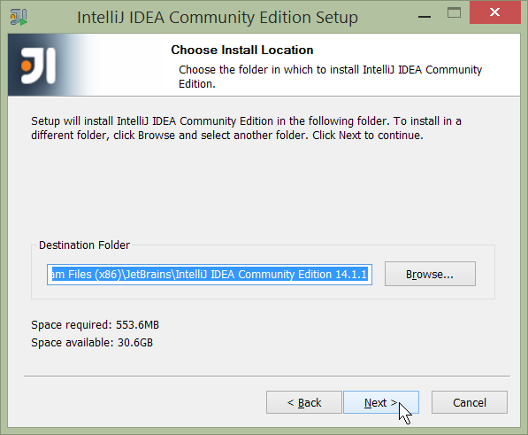
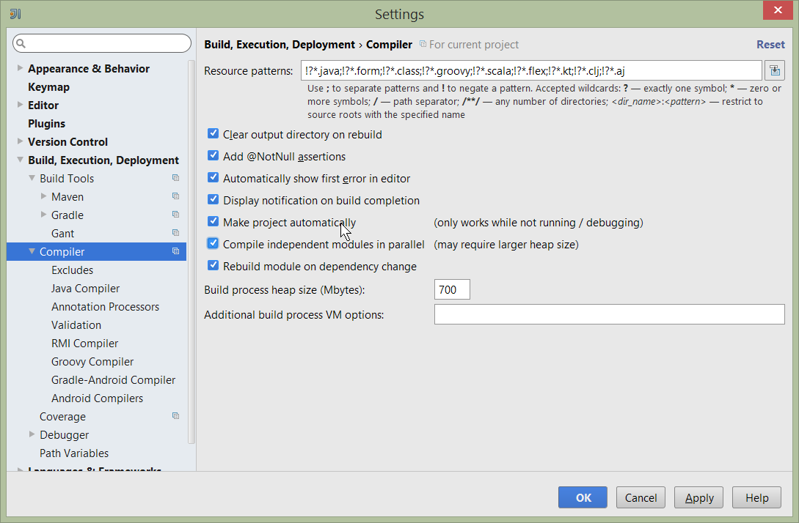

Setting up IntelliJ (Community Edition)
Setting up IntelliJ (Community Edition)
| This doc used IntelliJ CE 14.1.1, with screenshots taken for Windows. If you’re a MacOS user, I’m sure you can adapt :-) |
Download and Install
Download latest version of IntelliJ Community Edition, and install:
Start the wizard, click through the welcome page:
Figure 1. IntelliJ Installation Wizard - Welcome page
Choose the location to install the IDE:

Figure 2. IntelliJ Installation Wizard - Choose Location
Adjust any installation options as you prefer:

Figure 3. IntelliJ Installation Wizard - Installation Options
and the start menu:

Figure 4. IntelliJ Installation Wizard - Start Menu Folder
and finish up the wizard:

Figure 5. IntelliJ Installation Wizard - Completing the Wizard
Later on we’ll specify the Apache Isis/ASF code style settings, so for now select I do not want to import settings:

Figure 6. IntelliJ Installation Wizard - Import Settings
Finally, if you are young and trendy, set the UI theme to Darcula:

Figure 7. IntelliJ Installation Wizard Set UI Theme
New Project
In IntelliJ a project can contain multiple modules; these need not be physically located together. (If you are previously an Eclipse user, it is therefore similar to an Eclipse workspace).
Start off by creating a new project:

Figure 8. IntelliJ Create New Project
We want to create a new Java project:

Figure 9. IntelliJ Create New Project - Create a Java project
We therefore need to specify the JDK.
| at the time of writing Isis supports only Java 7; Java 8 is scheduled for support in Isis v1.9.0 |

Figure 10. IntelliJ Create New Java Project - Select the JDK
Specify the directory containing the JDK:

Figure 11. IntelliJ Create New Project - Select the JDK location
Finally allow IntelliJ to create the directory for the new project:

Figure 12. IntelliJ Create New Project
Import Settings
Next we need to configure IntelliJ with ASF/Apache Isis' standard templates and coding conventions. These are bundled as the isis-settings.jar JAR file (available from the Isis website).
Import using: File > Import Settings, and specify the directory that you have downloaded the file to:

Figure 13. IntelliJ Import Settings - Specify JAR file
Select all the (two) categories of settings available in the JAR file:

Figure 14. IntelliJ Import Settings - Select all categories
And then restart:

Figure 15. IntelliJ Import Settings - Restart
Other Settings
There are also some other miscellaneous settings that we recommend that you adjust.
First, specify an up-to-date Maven installation, using File > Settings (or IntelliJ > Preferences if on MacOS):

Figure 16. IntelliJ Import Settings - Maven Installation
Still on the Maven settings page, configure as follows:

Figure 17. IntelliJ Import Settings - Maven Configuration
And on the compiler settings page, ensure that build automatically is enabled (and optionally compile independent modules in parallel):

Figure 18. IntelliJ Import Settings - Compiler Settings
Some Plugins
Next, you might want to set up some additional plugins, using File > Settings > Plugins (or equivalently File > Other Settings > Configure Plugins).
Some to get you started are:

Figure 19. IntelliJ Plugins
Importing and Managing Maven Modules
Finally, let’s load in some actual code! We do this by importing the Maven modules.
First up, open up the Maven tool window (View > Tool Windows > Maven Projects). You can then use the 'plus' button to add Maven modules. In the screenshot you can see we’ve loaded in Isis core; the modules are listed in the Maven Projects window and corresponding (IntelliJ) modules are shown in the Projects window:

Figure 20. IntelliJ Maven Module Management - Importing Maven modules
We can then import another module (from some other directory). For example, here we are importing the Isis Addons' todoapp example:

Figure 21. IntelliJ Maven Module Management - Importing another Module
You should then see the new Maven module loaded in the Projects window and also the Maven Projects window:

Figure 22. IntelliJ Maven Module Management -
If any dependencies are already loaded in the project, then IntelliJ will automatically update the CLASSPATH to resolve to locally held modules (rather from .m2/repository folder). So, for example (assuming that the <version> is correct, of course), the Isis todoapp will have local dependencies on the Isis core.
You can press F4 (or use File > Project Structure) to see the resolved classpath for any of the modules loaded into the project.
If you want to focus on one set of code (eg the Isis todoapp but not Isis core) then you could remove the module; but better is to ignore those modules. This will remove from the the Projects window but keep them available in the Maven Projects window for when you next want to work on them:

Figure 23. IntelliJ Maven Module Management - Ignoring Modules
Confirm that it’s ok to ignore these modules:

Figure 24. IntelliJ Maven Module Management -
All being well you should see that the Projects window now only contains the code you are working on. Its classpath dependencies will be adjusted (eg to resolve to Isis core from .m2/repository):

Figure 25. IntelliJ Maven Module Management -